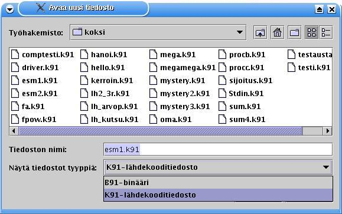
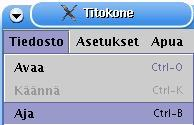
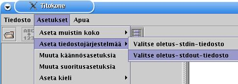
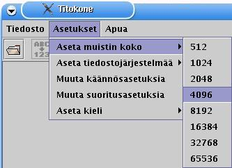

- Valikot
- Koodi-ikkuna
- Tilatiedot
- Näyttö
- Näppäimistösyötteet
- Symbolitaulu
- Rekisterit
- Kommentti-ikkuna
Titokone on konekielisimulaattori, jonka tarkoituksena on näyttää, kuinka symbolisen konekielen suoritus etenee yksinkertaisella prosessorilla.
|
|
|
Jos olet jo asentanut Titokoneen, siirry suoraan Titokoneen toimintoihin.

|
2.1 Javan hakeminen ja asennus |
Titokone on Javalla toteutettu TTK-91-konekielisimulaattori. Tarvitset sitä käyttääksesi Javan virtuaalikoneen (vähintään version 1.4.2) koneellesi. Javan virtuaalikoneen Sunin implementaation voi ladata osoitteesta http://java.sun.com. Seuraa siellä annettuja asennusohjeita.
Sunin Java-sivuilta on joskus hieman hankala löytää hakemaansa. Jos haluat asentaa pelkän virtuaalikoneen, haluat "JRE"-paketin, jos taas haluat myös kehitysympäristön tehdäksesi omia Java-ohjelmiasi (tai esimerkiksi uusia käännöksiä Titokoneeseen), haluat todennäköisesti "SDK"-pakkauksen. Tätä kirjoitettaessa J2SE:n versiot 1.4.2, sekä SDK:nä että JRE:nä (2 on alustan järjestysnumero, versionumero on erikseen), voi ladata sivulta http://java.sun.com/j2se/1.4.2/download.html.
Huomaa, että Helsingin yliopiston tietojenkäsittelytieteen laitoksella on jo valmiiksi asennettuna Java SDK 1.4.2 (tai uudempi versio), joten Javan asennus on vain tarpeen jos haluat käyttää Titokonetta esimerkiksi kotikoneellasi.
|
|
2.2 Titokoneen hakeminen |
Titokoneen voi hakea Tietokoneen toiminta -kurssin kotisivun kautta. Sivut ovat tällä hetkellä osoitteessa http://www.cs.helsinki.fi/teemu.kerola/tito/. Voit joko hakea suoraan JAR-paketin, joka sisältää Titokoneen (titokone.jar), tai ZIP-tiedoston, joka sisältää JAR-paketin, hieman ohjeita ja apuskriptejä.
|
|
2.3 Titokoneen asennus |
Jos JAR-paketit ovat sinulle jo tuttuja, riittää jos haet titokone.jar-tiedoston. (JAR on pakettitiedostomuoto; jos Windowsissasi on päiväntasainen versio WinZipistä, se osannee myös avata paketin jos näin haluat. Linuxissa komento jar avaa paketin, ks. alla.) Sen kummempaa asennusta ei tarvita, voit ajaa jar-tiedoston suoraan. Esimerkiksi Windowsissa sinun tarvitsee vain suorittaa komento
java.exe -jar titokone.jarhakemistossa, johon tallensit titokone.jar -paketin. Vastaavastaa ohjelman. Tähän mennessä sinulla tulisi olla Java asennettuna ja suorituspolullasi.
Hae titokone.zip ja avaa paketti haluamaasi kohdehakemistoon. Paketti luo avautuessaan alihakemiston titokone. Vaihda sitten tähän alihakemistoon ja tuplaklikkaa titokone-nimistä BAT-tiedostoa (MS-DOS Batch). Titokone.bat erottuu titokone.jar-tiedostosta ikoninsa perusteella; titokone.jar näyttää yleensä keltaiselta joltakin ruuvipuristimessa, kun taas titokone.bat näyttää enemmänkin hammasrattaalta ohjelmaikkunassa. Titokone.sh, käynnistyskripti Linux-koneita varten, on todennäköisesti Windowsin tuntematon tiedostotyyppi.
Jos BAT-tiedostot eivät enää toimi Windowsin versiossa MEGASUPERHYPER (testasimme niitä Windows XP:hen asti), lienee siellä kuitenkin vielä tuki komennon 'java.exe -jar C:\polku\hakemistoon\titokone\titokone.jar' ajamiseksi käynnistysvalikon kautta. Korvaa C:\polku\hakemistoon\titokone oikealla polulla, jolta titokone.jar löytyy.
Hae titokone.zip ja avaa se (esim. gunzip titokone.zip) valitsemassasi kohdehakemistossa. (Paketti luo avautuessaan alihakemiston 'titokone'.) Ohjelman ajaaksesi avaa terminaali-ikkuna, vaihda avautuneesta paketista luotuun titokone-hakemistoon ja aja komento
java -jar titokone.jar
Jos kirjoittaminen on rasittavaa, ZIP-paketissa on myös titokone.sh-aloitusskripti. Voit uudelleennimetä skriptin haluamaasi muotoon (esim. tk), jonka jälkeen riittää pelkkä komento ./tk (tai, jos et nimeä tiedostoa uudelleen, ./titokone.sh). Skripti ei vaihda työhakemistoa, joten joko sinun tulee säilyttää se samassa hakemistossa titokone.jar-paketin kanssa tai muokata sitä.
Halutessasi voit avata jar-paketin:
Windowsissa: Paketti on varmaankin helpointa avata käyttämällä
WinZipiä tai vastaavaa paketinkäsittelyohjelmaa.
Linuxissa: jar -xvf titokone.jar
Jar-paketti sisältää mm. lähdekooditiedostoja, esimerkiksi koska haluat lisätä uuden kielitiedoston (ks. mukana tuleva käyttöohjeen käännösten lisäysohjeet), huomaa että luokkatiedostot ovat osa Java-pakettia (tarkemmin ottaen kolmea pakettia). Käynnistääksesi muokatun ohjelman vaihda paketin juurihakemistoon (jossa 'fi'-alihakemisto on) ja aja seuraava komento:
Windowsissa: java.exe fi.helsinki.cs.titokone.Titokone Linuxissa: java fi.helsinki.cs.titokone.Titokone
Luokkien javadocit ovat hakemistossa javadoc/. Jotta voit kääntää java-tiedostoja (esimerkiksi lisätessäsi uuden kielen), tarvitset Javan SDK-pakkauksen, JRE ei tähän riitä.

|
3.1 TTK-91-ohjelman avaaminen |

|
Uuden tiedoston avaaminen tapahtuu painamalla avaa-pikakuvaketta tai valitsemalla valikosta Tiedosto --> Avaa. Valinnan seurauksena avautuu tiedostonäkymä. Tiedoston voi avata myös näppäinyhdistelmällä CTRL+O. |
|  |
Tiedostonäkymä näyttää nykyhakemiston tiedostot valitun päätteen mukaan. Näytettävät tiedostotyypit erotellaan päätteen mukaan: k91-pääte tarkoittaa lähdekooditiedostoa ja b91-pääte binääritiedostoa.
|
|
|
3.2 Lähdekoodin muokkaaminen |
Lähdekoodia on mahdollista muokata Titokoneessa seuraavasti:
joko

tai

Suosittelemme kuitenkin tiedostojen muokkausta erillisessä
ohjelmassa. Joskus on käynyt niinkin, että muokkauksen tulos on
tallentunut toiseen, hetki sitten avattuun k91-tiedostoon. Ks. vastaava virhetilannekuvaus.

|
3.3 TTK-91-ohjelman kääntäminen |

|
Titokoneen käännös on kaksivaiheinen: ensin tehdään syntaksitarkistus ja luodaan symbolitaulu. Toisella kierroksella muodostetaan objektikoodi. Kääntäminen aloitetaan painamalla käännä-pikakuvaketta tai valitsemalla valikosta Tiedosto --> Käännä. Kääntäminen toteutetaan käännösasetusten mukaisesti, joko pysähdellen tai kerralla loppuun asti kääntäen. Ohjelman kääntäminen voidaan aloittaa myös näppäinyhdistelmällä CTRL-K. |

|
Jatka askel eteenpäin: Riveittäin etenevää kääntämistä voi jatkaa tätä nappia tai rivinvaihtoa painamalla askel kerrallaan, edeten seuraavaan tapahtumaan asti. |

|
Jatka loppuun asti: Halutessaan käyttäjä voi suorittaa käännöksen kerralla loppuun. Tämä ei muuta riveittäin käännöksen asetusta, vaan vain yliajaa sen tämän käännöksen osalta. |

|
Pysäytä: käännös voidaan pysäyttää painamalla pysäytä-nappia. Näkymä pysyy siinä tilassa, missä se oli, kunnes Jatka-nappia painetaan. |
Tapahtumatyypeillä tarkoitetaan kääntäjän reagointia lähdekoodin sisältöön. Riviä kommentoidaan ja/tai riville pysähdytään asetusten mukaisesti.
Ensimmäinen kierros:
Toinen kierros:
Käännöksen valmistuminen:
|
|
3.4 Käännösasetukset |

|
Käännöksen aikaisia asetuksia voi muuttaa valitsemalla valikosta Asetukset --> Muokkaa käännösasetuksia. |

|
Käännösasetuksilla voidaan vaikuttaa käännöksen etenemistapaan ja kommentointiin.
|
|
|
3.5 TTK-91-ohjelman lataaminen |
Ohjelman lataaminen tapahtuu automaattisesti

|
3.6 TTK-91-ohjelman suoritus |
|  | K91-tiedoston käännöksen tai b91-tiedoston avaamisen seurauksena ohjelma ladataan muistiin ja on valmis suoritettavaksi. Suoritusnäkymässä koodi-ikkuna on jaettu kahteen osaan, koodi- ja data-alueeseen. On kuitenkin syytä huomioida, että Titokoneen muisti on todellisuudessa yhtenäinen alue; muistialueen jako kahteen osaan on toteutettu käytettävyyssyistä. Suoritus aloitetaan painamalla suorita-pikakuvaketta tai valitsemalla valikosta Tiedosto --> Aja. Suoritus toteutetaan suoritusasetusten mukaisesti joko pysähdellen tai kerralla loppuun asti suorittaen, animoiden tai ei. Suoritus voidaan aloittaa myös näppäinyhdistelmällä CTRL-B. |
|
|
Jatka askelittain: ohjelman ajaminen voidaan tehdä rivi kerrallaan. |
|
|
Jatka: halutessaan käyttäjä voi suorittaa ohjelman loppuun pysähtelemättä. |
|
|
Pysäytä: suoritus voidaan pysäyttää painamalla pysäytä-nappia. |
|
|
3.7 Suoritusasetukset |

|
Suoritusasetuksia pääsee vaihtamaan valitsemalla valikosta Asetukset --> Muuta suoritusasetuksia. |

|
Suoritusasetukset ovat melko pitkälti vastaavat käännösasetusten kanssa; lisätoimintona on animointi.
|
Suoritusasetuksia on mahdollista muuttaa myös suoraan pikakuvakkeista:

|
Riveittäin suorituksen kytkeminen päälle tai pois. |

|
Suorituksen lisäkommentoinnin kytkeminen päälle tai pois. |

|
Animointi-ikkunan näyttämisen kytkeminen päälle tai pois. |
|
|
3.8 Animointi |

|
|
|
|
3.9 STDIN- ja STDOUT-tiedostojen valinta |
|  |
|
|
|
3.10 Muistin tyhjentäminen |

|
Titokoneen muistin voi tyhjentää valikosta valitsemalla Tiedosto --> Tyhjennä muisti. Muistin tyhjentämisen lisäksi toiminnolla voidaan tyhjentää lähdekoodinäkymä. Jos toimintoa käytetään käännös- tai ajovaiheessa, kyseinen toiminto keskeytyy ja ruudulle palautetaan avausnäkymä, jossa rekisterit, symbolitaulu ja koodinäkymä on tyhjennetty. Muistin tyhjennys voidaan tehdä myös näppäinyhdistelmällä CTRL-E. Ellei muistia tyhjennetä tai sen kokoa muuteta, aiempien ohjelmien jäljet jäävät muistiin. Niiden symboliset muodot piilotetaan selkeyden vuoksi. Jos ohjelma lukee muistipaikasta tai rekisteristä ennen kuin tallentaa sinne jotakin, tulos voi olla jotakin muuta kuin 0. |
|
|
3.11 Muistin koon vaihtaminen |
|  |
Titokoneen muistin kokoa on mahdollista muuttaa valitsemalla valikosta Asetukset --> Aseta muistin koko. Muistin kokovaihtoehtoja on kahdeksan erilaista 512 rivistä 65536 riviin asti. Kun uusi muistin koko asetetaan, koodinäkymä tyhjennetään ja näkyville palautetaan avausnäkymä. Kun muistin koko ylittää 32768 riviä, loppupään riveihin ei voida viitata suoraan koodista, sillä vakio-osaan ei mahdu 32768:aa suurempia lukuja. Sen sijaan esimerkiksi riville 32768+500 voidaan viitata seuraavalla koodinpätkällä: LOAD R1, =32768 ; Ladataan maksimivakio rekisteriin LOAD R2, 500(R1) ; Ladataan rivin 32768+500 sisältö R2:een. Arvon voi myös tallentaa EQUn tai DC:n avulla, koska niiden maksimiarvot ovat suuremmat. Rekisterit ovat kaikki 32-bittisiä muistirivien tapaan, vaikka komentojen osoiteosaan ei 16 bittiä enempää mahdukaan. |
|
|
3.12 Käyttöliittymän kielen vaihtaminen |

|
Titokoneen käyttöliittymässä on mahdollista vaihtaa kieliasetuksia. Kieli valitaan valikosta Asetukset --> Aseta kieli. Oletuskielinä ovat suomi ja englanti. Kielen voi vaihtaa suoraan lennosta, lähes riippumatta käyttöliittymän muista toiminnoista. Jos käyttäjä on määritellyt oman kielitiedoston, hän voi joko valita sen luettelosta lisättyään sen kieliasetustiedostoon tai valita sen erillisestä tiedostosta. Kieliasetustiedostoon lisätyt kielet tulevat näkyville 'Aseta kieli' -valikon alle. Erillisessä tiedostossa olevan kielitiedoston avaaminen onnistuu valikon kohdasta 'Valitse tiedostosta...'. Jos kielitiedosto on oikeaa muotoa, kieli vaihtuu välittömästi. Jos tietyn tekstin käännösvastine puuttuu kielitiedostosta, käytetään käyttöliittymässä oletuskieltä, englantia, kyseisen tekstin kohdalla. Lisäohjeita uuden kielen lisäämiseen löytyy kohdasta Uuden kielen tukeminen. |
+--------------------------------------------------------------------+ | Käskykoodi ¦ Rj ¦ M ¦ Ri ¦ osoiteosa ADDR | | 8 bittiä ¦ 3 ¦ 2 ¦ 3 ¦ 16 bittiä | +--------------------------------------------------------------------+ 31 24 23 16 15 0
Symbolisessa konekielessä käskyt esitetään muodossa
VIITE OPER Rj,M ADDR(Ri)
missä OPER käskyn symbolinen nimi
Rj ensimmäinen operandi (rekisteri R0..R7)
M osoitusmoodi:
= välitön operandi
suora osoitus (tyhjä, ei siis merkitä)
@ epäsuora osoitus
ADDR osoiteosa (muistiosoite tai vakio)
Ri mahdollinen indeksirekisteri (rekisteri R0..R7)
Jos jollakin käskyn osalla ei ole merkitystä, sen voi jättää merkitsemättä. Käskyn eteen voi laittaa viitteeksi symbolisen osoitteen, jonka tulee sisältää vähintään yksi muu kuin numeromerkki. Kelvollisia merkkejä A-Ö, 0-9 ja _. Vain 8 ensimmäistä merkkiä on merkitseviä.
Lähes kaikille käskyille on käytettävissä seuraavat muodot:
OPER Rj,ADDR suora muistiosoitus OPER Rj,=ADDR välitön operandi OPER Rj,@ADDR epäsuora muistiosoitus OPER Rj,ADDR(Ri) indeksoitu osoitus OPER Rj,=ADDR(Ri) indeksoitu välitön osoitus OPER Rj,@ADDR(Ri) indeksoitu epäsuora muistiosoitus OPER Rj,Ri suora rekisteriosoitus
Poikkeuksia ovat:
STORE jälkimmäinen operandi on aina kohdeosoite,
ei voi olla rekisteri, tai vakio.
POP Jälkimmäisen operandin tulee aina olla rekisteri
HYPPYKÄSKYT jälkimmäinen operandi on aina kohdeosoite,
ei voi olla vakio
tilarekisteriä tutkivissa käskyissä on ensimmäinen
operandi merkityksetön
NOP operandeilla ei merkitystä
Tiedonsiirtokäskyt:
LOAD vie jälkimmäisen operandin arvon rekisterin Rj arvoksi.
STORE talleta rekisterissä Rj oleva kokonaisluku jälkimmäisen operan-
din arvoksi.
IN lukee jälkimmäisenä operandina kerrotulta laitteelta kokonaislu-
vun rekisteriin Rj (näppäimistöltä esim IN R1,=KBD)
OUT tulostaa rekisterissä Rj olevan kokonaisluvun jälkimmäisenä
operandina kerrotulle laitteelle (näytölle esim. OUT R1,=CRT)
Aritmeettiset ja loogiset käskyt:
ADD (add) lisää rekisterissä Rj olevaan lukuun jälkimmäisen operan-
din arvon.
SUB (subtract) vähennä rekisterissä Rj olevasta luvusta jälkimmäisen
operandin arvon.
MUL (multiply) kerro rekisterissä Rj oleva luku jälkimmäisen operan-
din arvolla.
DIV (divide) jaa rekisterissä Rj oleva luku jälkimmäisen operandin
arvolla. Jakolaskussa vain kokonaisosalla on merkitystä.
MOD (modulo) jaa rekisterissä Rj oleva luku jälkimmäisen operandin
arvolla. Jakolaskussa vain jakojäännösosalla on merkitystä.
AND (boolean AND) looginen JA-operaatio Rj:n ja jälkimmäisen
operandin arvon välillä.
OR (boolean OR) looginen TAI-operaatio Rj:n ja jälkimmäisen
operandin arvon välillä.
XOR (boolean XOR) looginen poissulkeva TAI-operaatio Rj:n ja
jälkimmäisen operandin arvon välillä.
SHL (shift left) siirrä rekisterin Rj bittejä vasemmalle toisen
operandin ilmoittama määrä. Täytä oikeaa päätä 0-biteillä.
SHR (shift right) kuten SHL, mutta siirrä oikealle.
SHRA (arithmetic shift right) kuten SHR, mutta säilyttäen etumerkin
(täytä vasenta päätä etumerkkibitillä).
COMP (compare) vertaa ensimmäisen operandin arvoa toisen operandin
arvoon ja aseta vertailun tulos tilarekisterin bitteihin SR
L=pienempi, E=yhtäsuuri, G=suurempi.
Haarautumiskäskyt:
JUMP (unconditional jump) ehdoton hyppy toisen operandin ilmaisemaan
kohdeosoitteeseen.
JNEG (jump if negative) jos Rj < 0, niin hyppää jälkimmäisenä operan-
dina olevaan osoitteeseen, muuten jatka seuraavasta käskystä.
JZER (jump if zero) jos Rj = 0
JPOS (jump if positive) jos Rj > 0
JNNEG (jump if not negative) jos Rj >= 0
JNZER (jump if not zero) jos Rj <> 0
JNPOS (jump if not positive) jos Rj <= 0
JLES (jump if less) jos tilarekisterin SR bitti L asetettu, niin
hyppää jälkimmäisenä operandina olevaan osoitteeseen, muuten
jatka seuraavasta käskystä (käyttö COMP-käskyn yhteydessä).
JEQU (jump if equal) jos bitti E asetettu
JGRE (jump if greater) jos bitti G asetettu
JNLES (jump if not less) jos bitti E tai G asetettu
JNEQU (jump if not equal) jos bitti L tai G asetettu
JNGRE (jump if not greater) jos bitti L tai E asetettu
Pinokäskyt:
Käskyn ensimmäinen operandi rekisteri Rj osoittaa pinon huipulle pinon päällimmäiseen alkioon. Pino-osoittimena käytetään tavallisesti rekisteriä SP (eli R6).
PUSH Kasvata pino-osoittimen Rj arvoa yhdellä ja vie jälkimmäinen
operandi pinon päällimmäiseksi alkioksi.
POP Poista pinosta päällimmäinen alkio ja vie se jälkimmäisenä
operandina kerrottuun rekisteriin (HUOM: aina rekisteri).
Vähennä pino-osoittimen Rj arvoa yhdellä.
PUSHR Vie pinoon rekisterit R0, R1, R2, R3, R4, R5 ja R6 (SP) tässä
järjestyksessä. Ennen kunkin rekisterin vientiä kasvata pino-
osoittimen Rj arvoa yhdellä.
POPR Nouda pinosta arvot rekistereihin R6 (SP), R5, R4, R3, R2, R1 ja
R0 tässä järjestyksessä. Jokaisella noudolla hae ensin arvo
pino-osoittimen Rj osoittamasta kohdasta kyseiseen rekisteriin
ja sen jälkeen vähennä pino-osoittimen Rj arvoa yhdellä.
Aliohjelmakäskyt:
CALL (call procedure) aliohjelmakutsu, eli kontrollin siirto toisen
operandin ilmoittamaan osoitteeseen. Tallettaa paluuosoitteen
pinoon, jonka huipulle osoittaa Rj.
EXIT palaa aliohjelmasta kutsua seuraavaan käskyyn. Paluuosoite löytyy
pinosta, jonka huipulle osoittaa Rj. Jälkimmäisenä operandina
pinossa välitettyjen parametrien lukumäärä.
Systeemikutsut:
SVC (supervisor call) käyttöjärjestelmän palvelurutiinin kutsu.
(systeemikutsu). Ensimmäisenä operandi pinon huippu Rj ja toisena
operandina palvelun numero. Palvelurutiinikutsut ovat erikoisia
kutsuja ennalta määrättyihin aliohjelmiin. Rutiinien koodi on
näkymättömissä, koodialueen "ulkopuolella".
Palvelunumeroita:
HALT : Lopettaa ohjelman suorituksen.
TIME : Antaa kellonajan. Pinossa välitettävä osoitteet, jonne
halutaan tunnit, minuutit, sekunnit (HUOM: järjestys!).
DATE : Antaa päiväyksen. Pinossa välitettävä osoitteet, jonne
halutaan vuosi, kuukausi ja päivä. (HUOM: järjestys!).
READ : Lukee kokonaisluvun. Pinossa välitettävä osoite, jonne
luku halutaan luettavan.
WRITE: Kirjoittaa kokonaisluvun. Pinossa välitettävä tulostettava
arvo.
Muita:
NOP (no operation) ei toimintaa
Käsky Binääri Desimaali Heksadesimaali NOP 0000 0000 0 00 STORE 0000 0001 1 01 LOAD 0000 0010 2 02 IN 0000 0011 3 03 OUT 0000 0100 4 04 ADD 0001 0001 17 11 SUB 0001 0010 18 12 MUL 0001 0011 19 13 DIV 0001 0100 20 14 MOD 0001 0101 21 15 AND 0001 0110 22 16 OR 0001 0111 23 17 XOR 0001 1000 24 18 SHL 0001 1001 25 19 SHR 0001 1010 26 1A SHRA 0001 1011 27 1B COMP 0001 1111 31 1F JUMP 0010 0000 32 20 JNEG 0010 0001 33 21 JZER 0010 0010 34 22 JPOS 0010 0011 35 23 JNNEG 0010 0100 36 24 JNZER 0010 0101 37 25 JNPOS 0010 0110 38 26 JLES 0010 0111 39 27 JEQU 0010 1000 40 28 JGRE 0010 1001 41 29 JNLES 0010 1010 42 2A JNEQU 0010 1011 43 2B JNGRE 0010 1100 44 2C CALL 0011 0001 49 31 EXIT 0011 0010 50 32 PUSH 0011 0011 51 33 POP 0011 0100 52 34 PUSHR 0011 0101 53 35 POPR 0011 0110 54 36 SVC 0111 0000 112 70
Näitä symboleja voi käyttää TTK-91-ohjelmassa niitä erikseen määrittelemättä.
Symboli Arvo -------------------- CRT 0 KBD 1 STDIN 6 STDOUT 7 HALT 11 READ 12 WRITE 13 TIME 14 DATE 15
Kääntäjän ohjauskäskyt antavat ohjeita symbolisen konekielen kääntäjälle. Ne EIVÄT ole varsinaisia symbolisen konekielen käskyjä.
tunnus EQU arvo
Samaistuskäsky EQU määrittelee symboliselle tunnukselle kokonaislukuar- von. Tunnusta voi käyttää käskyn ADDR -kentässä, jolloin se käsitellään kuten vastaavaan paikkaan kirjoitettu "arvo".
tunnus DC arvo
Muistinvarauskäsky DC (data constant) varaa yhden muistisanan vakiota varten, samaistaa varatun muistipaikan osoitteen ja symbolisen osoitteen "tunnus" sekä asettaa varatun muistipaikan sisällöksi luvun "arvo". Tunnusta voi käyttää käskyn ADDR-kentässä kuten muistiosoitetta.
tunnus DS koko
Muistinvarauskäsky DS (data segment) varaa muistialueen, jonka koko on "koko" (sanoina) ja samaistaa varatun muistialueen alkuosoitteen ja symbolisen osoitteen "tunnus". Käytetään globaalien muuttujien tilanvaraukseen. Tunnusta voi käyttää käskyn ADDR -kentässä kuten muistiosoitetta.
asetus DEF merkkijono
DEF muuttaa TTK-91-koneen tiedostojärjestelmän simulointiasetuksia. Merkkijonon 'merkkijono' tulee olla absoluuttinen tiedostopolku.
Esimerkkejä:
STDIN DEF /home/myuser/ttk91/stdin STDOUT DEF C:\mydir\stdout
Muutettavat asetukset:
STDIN Stdin-datan lähdetiedosto.
STDOUT Stdout-datan kohdetiedosto.
HOME Käyttäjän kotihakemisto. Titokoneessa tätä ei käytetä, vaan
kotihakemisto kysytään Javan virtuaalikoneen kautta itse
käyttöjärjestelmältä.
Oletustiedostot kahdelle ensimmäiselle ovat stdin ja stdout käyttäjän työhakemistossa.
Jos yhteenveto Titokoneen käskykannasta ei tyydyttänyt tiedonjanoasi, lisää aiheesta löydät kurssin Tietokoneen toiminta kotisivuilta.
Kun käyttäjä muuttaa asetuksia, Titokone tallentaa muutokset tämän kotihakemistoon tiedostoon titokone.cfg. Asetustiedosto ylikirjoittuu joka asetusmuutoksen jälkeen.
Mikäli Titokone on avattu jar-paketistaan, järjestelmän oletusasetukset löytyvät tiedostosta fi/helsinki/cs/titokone/etc/settings.cfg. Tämän tiedoston sisältö on seuraavanlainen:
# Default settings. Running mode: commented (+1), one row at a time (+2),
# but not animated (+4) compilation mode: commented (+1) but not
# one happening at a time (+2). Stdin and stdout file paths given are
# relative to the current working directory. 'Stdout use' describes that
# the file should be used in append mode ('append') instead of
# overwriting ('overwrite') it for every new run. Memory size is 2^9 =
# 512 lines.
Language = English
Running mode = 3
Compilation mode = 1
Stdin file = stdin
Stdin path = relative
Stdout file = stdout
Stdout path = relative
Stdout use = append
Memory size = 9
Asetustiedoston käsin muuttamiseen ei yleensä ole tarvetta. STDIN- ja STDOUT-tiedostojen polut tallentuvat tiedostoon kuitenkin aina ns. absoluuttisessa muodossa, kun ne on valittu Titokoneen käyttöliittymästä. Mikäli polku halutaan ilmaista suhteessa työhakemistoon, näin voidaan tehdä asettamalla kohdan "Stdin path" tai "Stdout path" arvoksi 'relative', kuten yllä.
Lisäksi, samoin jar-paketin sisällä fi/helsinki/cs/titokone/etc/-hakemistossa, sijaitsee kieliasetustiedosto languages.cfg. Tästä tiedostosta Titokone hakee luettelon järjestelmän osiksi lisätyistä kielitiedostoista, jotka luetellaan kielenvaihtovalikossa kielen nimen perusteella. Tällaiset kielitiedostot on sijoitettu fi/helsinki/cs/titokone/resources/-hakemistoon, niiden nimi on muotoa Translations_xx.class ja ne kuuluvat pakettiin fi.helsinki.cs.titokone.resources. Kielitiedosto muodostuu pareista muotoa "kielen nimi valikossa" = "xx". Arvon "xx" tulee olla kieltä kuvaava kaksikirjaiminen tunnus (tämä syötetään java.util.Localen konstruktorille). Oletuskielitiedoston sisältö on seuraavanlainen:
Suomi = fi English = en
Uuden kielen lisääminen Titokoneeseen tapahtuu antamalla käännösvastineet oletuskielenä toimivan kielen sanoille ja fraaseille. Oletuskielenä on englanti. Lisättävää kieltä varten kirjoitetaan ohjeiden mukainen Java-tiedosto, joka käännetään ja avataan Titokoneen käyttöliittymän kautta. Uuden kielitiedoston kirjoittaminen käy helpoiten ottamalla mallia olemassaolevasta kielitiedostosta. Avaa koneeltasi ensin tekstieditori, johon haet titokone.jar -paketin mukana tulleen tiedoston Translations_fi.java -tiedoston hakemistosta fi/helsinki/cs/titokone/resources. Tekstieditoriin aukeaa Javan ResourceBundle-kalustoa hyväksikäyttävä luokka, joka muodostuu 2-ulotteisesta Object-taulukosta ja sen palauttavasta metodista. Taulukon alkiot näyttävät seuraavilta:
{ "Fetch second operand from memory slot {0}.", "Nouda jälkimmäinen operandi muistipaikasta {0}."},
{ "Indirect memory addressing mode.", "Epäsuora muistiosoitus."},
{ "1: Fetch indexing value from memory slot {0}.", "1: Nouda indeksointiarvo muistipaikasta {0}."},
Jokainen rivi koostuu aaltosulkujen välissä olevasta oletuskielen avainarvosta ja sen käännösvastineesta. Uloimpien aaltosulkujen sisällä on kaksi lainausmerkeillä rajattua tekstikenttää, jotka on erotettu pilkulla toisistaan. Ensimmäisten lainausmerkkien sisällä on oletuskielinen käännösavain. Toisten lainausmerkkien sisällä on käännösvastine. Oma käännösvastine luodaan korvaamalla suomenkielinen teksti. Yleensä lauseen merkitys on jossain määrin pääteltävissä itse lauseesta. Käännöksiä helpottamaan Translations_fi -tiedostossa on kommenteilla kerrottu, mihin luokkaan kyseiset käännökset viittaavat. Jos käännettävän lauseen merkitys tuntuu epäselvältä, luokan lähdekoodista on mahdollista selvittää sen konteksti ja esimerkiksi käännökseen sijoitettavan muuttujan tarkoitus.
Allaolevan esimerkin käännöksissä esiintyy erikoismerkkijono, '{0}'. Kyseisen merkkijonon tilalle sijoitetaan muuttuja, joka liittyy käyttöliittymälle välitettävään viestiin. Esimerkin ensimmäisen rivin {0} sisältää muistipaikan numeron. Käännöstä tehdessä on mahdollista luoda uusi käännösvastine, jonka muuttuja ei olekaan rivin lopussa, esimerkiksi:
//Animator
{ "Fetch second operand from memory slot {0}.", "Nouda jälkimmäinen operandi muistipaikasta {0}."},
-->
//Animator
{ "Fetch second operand from memory slot {0}.", "Muistipaikasta {0} noudetaan jälkimmäinen operandi."},
Uusi kielitiedosto luodaan seuraavasti:
Voit myös lisätä uuden kielen pysyväksi osaksi järjestelmää, jolloin käännöstiedostoa ei enää tarvitse etsiä joka kerta uudelleen. Tallenna kohdassa 2 tiedosto hakemistoon fi/helsinki/cs/titokone/resources/ muiden käännöstiedostojen kanssa. Muuta luokan nimeksi rivillä
public class Translations_fi {
käännöskielesi ('xx') mukaan Translations_xx ja tallenna se tiedostoon Translations_xx.java. Korvaa 'xx' kohdekielesi ISO-koodilla (Javan Localen tukemat versiot ISO 639:stä). Esimerkiksi jos kääntäisit ohjelman norjaksi, koodi olisi 'no', saksan vastaava olisi 'de'. Älä poista tiedostosta (kohdan 4 mukaan) pakettimääreriviä, sillä nyt sitä tarvitaan.
Kun käännöksesi on valmis ja sille on käännetty .class-tiedosto, asenna se lisäämällä kieliasetustiedostoon fi/helsinki/cs/titokone/etc/languages.cfg rivi "kielen nimi valikossa" = "xx", jossa korvaat taas xx:n kielikoodillasi. Esimerkiksi "Deutsch = de". Ks. myös 5.1, asetustiedostot. Kun nyt käynnistät Titokoneen seuraavan kerran, uusi kieli on yhtenä vaihtoehtona valikossa.